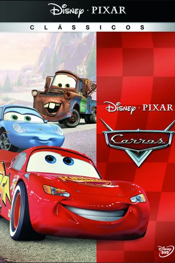

Carros (filme)
Relâmpago McQueen (Owen Wilson) é um carro de corridas ambicioso, que já em sua 1ª temporada na Copa Pistão torna-se um astro. Ele sonha em se tornar o 1º estreante a vencer o campeonato, o que possibilitaria que assinasse um patrocínio com a cobiçada Dinoco A fama faz com que Relâmpago acredite que não precisa da ajuda de ninguém, sendo uma "equipe de um carro só". Esta arrogância lhe custa caro na última corrida da temporada, fazendo com que seus dois pneus traseiros estourem na última volta da corrida. O problema permite que seus dois principais adversários, o ídolo Rei (Richard Petty) e o traiçoeiro Chicks (Michael Keaton), cruzem a linha de chegada juntamente com ele, o que faz com que uma corrida de desempate seja agendada na California. Relâmpago é então levado para o local de corrida por Mack (John Ratzenberger), um caminhão que faz parte de sua equipe. Ele quer chegar ao local antes de seus competidores e, por causa disto, insiste que Mack viage sem interrupções. Mack termina dormindo em pleno trânsito, o que faz com que a caçamba se abra e Relâmpago, que também estava dormindo, seja largado em plena estrada. Ao acordar Relâmpago tenta encontrar Mack a todo custo, mas não tem sucesso. Em seu desespero ele chega à pequena Radiator Springs, uma cidade do interior que tem pouquíssimo movimento e que jamais ouviu falar de Relâmpago ou até mesmo da Copa Pistão. Porém, por ter destruído a principal rua da cidade, Relâmpago é condenado a reasfaltá-la. Obrigado a permanecer na cidade contra a sua vontade, aos poucos ele conhece os habitantes locais e começa a se afeiçoar por eles.

Carros (título original: Cars) é um filme norte-americano de comédia esportiva animada de 2006, produzido pela Pixar Animation Studios para a Walt Disney Pictures. O filme foi dirigido por John Lasseter, codirigido por Joe Ranft (seu único trabalho na direção), produzido por Darla K. Anderson e escrito por Lasseter, Ranft, Dan Fogelman, Kiel Murray, Phil Lorin e Jorgen Klubien, baseado em uma história de Lasseter, Ranft e Klubien. O elenco principal de vozes inclui Owen Wilson, Paul Newman (em seu papel final de voz em cinema), Bonnie Hunt, Larry the Cable Guy, Tony Shalhoub, Cheech Marin, Michael Wallis, George Carlin, Paul Dooley, Jenifer Lewis, Guido Quaroni, Michael Keaton, Katherine Helmond, John Ratzenberger e Richard Petty. Além disso, os pilotos de corrida Dale Earnhardt Jr. (como "Junior"), Mario Andretti, Michael Schumacher e o entusiasta de carros Jay Leno (como "Jay Limo") dão voz a si mesmos. Ambientado em um mundo povoado inteiramente por veículos antropomórficos, o filme acompanha um jovem carro de corrida egocêntrico chamado Lightning McQueen que, a caminho da corrida mais importante de sua vida, fica preso em uma cidade esquecida ao longo da Rota 66 dos EUA, chamada Radiator Springs, onde aprende sobre amizade e começa a reavaliar suas prioridades. O desenvolvimento de Carros começou em 1998, após a conclusão da produção de A Bug's Life, com um novo roteiro intitulado The Yellow Car, que era sobre um carro elétrico vivendo em um mundo devorador de gasolina, com roteiro de Klubien. Foi anunciado que os produtores concordaram que poderia ser o próximo filme da Pixar após A Bug's Life, programado para um lançamento em 1999, particularmente por volta de 4 de junho; a ideia foi posteriormente descartada em favor de Toy Story 2. Pouco depois, a produção foi retomada com grandes mudanças no roteiro. O filme foi inspirado nas experiências de Lasseter em uma viagem de carro pelo país. Randy Newman compôs a trilha sonora do filme, enquanto artistas como Sheryl Crow, Rascal Flatts, John Mayer e Brad Paisley contribuíram para a trilha sonora. Carros acabou sendo o último filme produzido independentemente pela Pixar após sua compra pela Disney em janeiro de 2006. Carros estreou em 26 de maio de 2006 no Lowe's Motor Speedway em Concord, Carolina do Norte, e foi lançado nos cinemas dos Estados Unidos em 9 de junho, posteriormente foi lançado nos cinemas de Portugal no dia 29 de junho e no Brasil no dia 30 de junho. O filme recebeu críticas geralmente positivas e sucesso comercial. Arrecadou US$ 462 milhões mundialmente contra um orçamento de US$ 120 milhões, tornando-se o sexto filme de maior bilheteria de 2006. Recebeu duas indicações no Oscar de 2007, incluindo Melhor Filme de Animação, mas perdeu para Happy Feet (porém, venceu tanto o Annie Award de Melhor Filme de Animação quanto o Globo de Ouro de Melhor Filme de Animação). O filme foi dedicado a Ranft, que morreu em um acidente de carro durante a produção do filme. O sucesso de Carros lançou uma franquia multimídia, que inclui duas sequências: Carros 2 (2011) e Carros 3 (2017), bem como dois filmes spin-off produzidos pela Disneytoon Studios: Aviões (2013) e Planes: Fire and Rescue (2014).

| Nome: | Carros |
| Ano de Lançamento: | 2006 |
| Estudio: | Pixar Animation Studios |
| Destribuidora: | Walt Disney Pictures |
| Diretor: | John Lasseter |
| Gênero: | Animação, Comédia e Aventura |
| Duração: | 117 minutos |
| Personagem Principal: | Relâmpago McQueen |
| Música: | Randy Newman |
| País de Origem: | Estados Unidos |